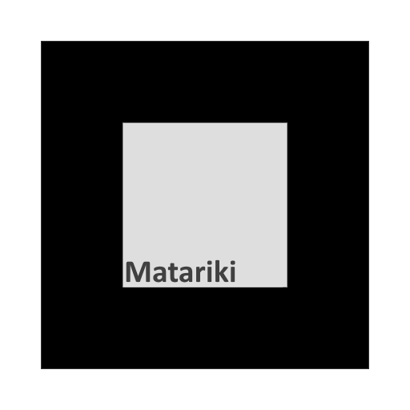

Matariki Augmented Reality
Enter a maori phrase here...
Instructions
- Click "Start"
- Accept Camera Permissions
- Point camera at the Constellation Markers.
- The Matariki marker example is below

Enter a maori phrase here...
Waiting for marker...